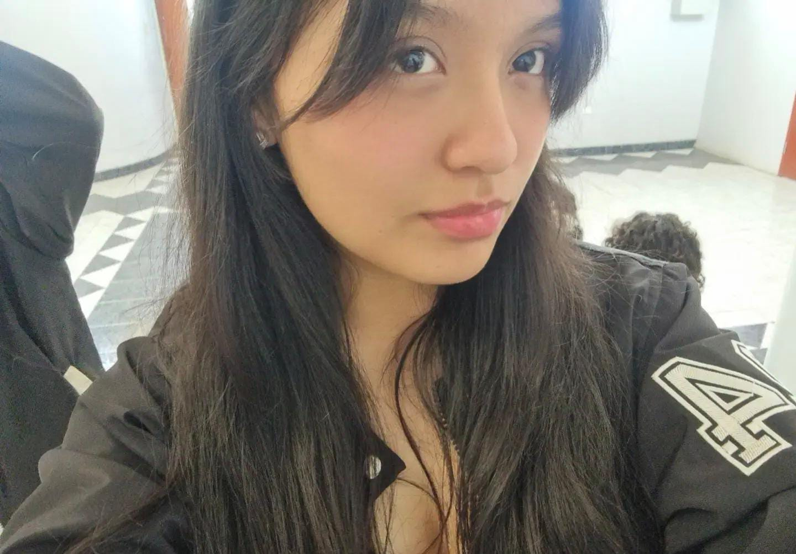

Un año después
Los recuerdos que guardamos
algunas páginas de este año que no quiero que olvides
Nos conocimos el día anterior al día del padre, en una tarde fría — debo admitir que apenas te vi sentí una sensación de intriga que me llevó a hablarte, aunque ya me había quedado sin preguntas ni temas para conversar. Fue la primera vez que yo iniciaba una conversación con una chica; nunca pensé que me fueras a dar tu número, y mucho menos que mantendríamos una amistad que hasta hoy me sigue permitiendo apoyarte con mensajes largos o con este tipo de sorpresas.
Pasaron los días y, de hecho, fue en la primera semana de habernos conocido que coincidimos en vernos a la hora de salida. También fue el comienzo de varios días de la semana en que nos quedábamos hablando de todo, en especial los sábados mientras esperábamos los carros. Si debo afirmar algo, es que disfruté mucho ese tiempo contigo — tu presencia me daba tranquilidad y seguridad, tanto que no necesitaba ocultar quién soy. Con el paso de los días nuestra conversación por chat se volvió más fluida y sin filtros, aunque en persona yo seguía siendo de pocas palabras. Recuerdo cuando me invitaste a dar una vuelta por DollarCity viendo productos de cuidado e higiene personal — fue la primera vez que alguien me invitaba a algo así, y me sorprendió ver cuánto sabías para elegir lo que ibas a comprar, aunque ese día no te llevaste nada.
Es cierto que no hicimos muchas cosas ni hablamos tanto como otros lo harían, pero el tiempo que hemos compartido lo voy a recordar siempre — ¿por qué? Es simple: eres mi mejor amiga, y si voy a construir recuerdos quiero que estés en ellos, aunque tengas que soportar a un introvertido de pocas palabras y poca energía. Sé que tú podrás olvidar muchas de las cosas que hablamos o hicimos, pero yo no, y las voy a guardar para devolvértelas en palabras de apoyo los días en que te sientas mal. Sé también que este último tiempo no ha sido sencillo: saturada, cansada, amaneciéndote entre apuntes y cargando con una que otra mala experiencia que no debiste vivir. Y aun así sigues estudiando, ordenando tu cuarto, tu material, tu vida — y hasta sumaste una nueva amistad en el camino. Eso también es avanzar, aunque a veces no lo sientas así.

Milagros Luminé